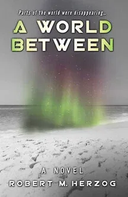

Fiction
A World Between: Chapter One
Parts of the world were disappearing: for a while, nobody noticed. Or cared.
From the novel A World Between

Nowhere.
That’s where we’re headed, Susan thought. The rutted, dirt-crusted road which the jeep bounced over in backbreaking intervals was going to lead nowhere, as far as she was concerned. Still, something out there was stirring the local tribes so deeply that they were ignoring the food cartons she’d finally gotten to the Distribution Center. Not that there was enough for all of them, nor would they find all the food edible, but like Susan they had gotten used to what was, not what might be, and usually crowded in when a shipment arrived. Not today. Stuck in a makeshift warehouse where the trapped heat and inactivity were equally oppressive, Susan finally yielded to the impulse to find out what was going on.
That morning she arrived expecting to find a bustling mob lined up at the warehouse door. Instead there was just Ambway, ready to work as always. Ambway was her translator, guide, liaison, and lifeline. When not with her, he worked as a guide for the safaris and hunts that still passed through. Most shots were fired with cameras these days, often by teenagers accompanied by their parents, or couples on honeymoon; only the well-to-do could visit here, drive past the huts, avoiding the notion that inside people were hungry beyond their comprehension, a hunger unto death. But Susan couldn’t drive past; she lived to feed them, on mission from the United Nations, here now for sixteen months, her third such tour.
As she looked at the spot she felt a chill run through her, whether of ancient recognition, current fear, or the rain she couldn’t be sure.
She asked Ambway where everybody was. He shrugged his shoulders. They stood in front of the warehouse, looking onto the barren dirt streets that wound through the quiet huts. Several tribesmen came up the street, riding donkeys or running alongside them. She recognized one of them, a man in his thirties who often helped her. She called out, but he kept riding by. Ambway yelled, and they yelled back to him without breaking stride.
“What did they say?” she asked. “What’s going on?”
“Don’ know, Ms. Corporell. They just say they going to big junction, like everybody else.”
“Gee, a party and we’re not invited. What do you think, Ambway?”
“Don’t know.”
She decided to wait around, convinced that soon people would come for the food. By mid-afternoon nobody had, and no one else had passed by. The junction was a long, tough ride off, but it beat standing around doing nothing; they did that in the offices in the capital, which is why she always opted for the field. They got the Land Rover the UN Mission had bought cheap from one of the diminishing number of hunter guides, and Susan drove into the flat, dry lands that preceded the jungle.
The dust poured through the open windows along with the heat. Her face became a reddish clay mask under her blonde hair. First makeup in over a year, she thought. After several miles she didn’t even bother trying to brush it off. Swatches of dense growth closed in on them, around the river beds and mud flats, where the wheels spun resolutely, only to open up again into broad dusty flats.
They kept swigging water from bottles in the back, and after a while stopped talking, trying to adjust their bodies to the bucking and bouncing over routes that were barely roads, occasional long straight expanses that Susan navigated with Ambway’s help, for there were no markers and nothing to indicate what was road and what was just the flat land that surrounded them; other times through narrow paths where limbs and brush swept over the car, streaking its dirty sides, enveloping them. Ambway instinctively pulled back as a low branch hit the windshield; Susan didn’t flinch. The leaves reached through the open windows and brushed her, as if they were trying to devour anything that passed their way.
The skies turned dark quickly, as they did here; one moment there was sun, the next her vision was obscured by a dense pouring rain. The wind beat against the windows and doors. Susan preferred the Land Rover to the Toyotas they used with the rest of the Mission; they were heavier, steadier in storms, more sure-footed in the mud. It was hard to prepare for the worst, and often unaffordable, but out here the worst came often.
Susan slowed as a stream appeared, normally a trickle swollen wide from the sudden downpour. She downshifted, kept them at a steady pace to maintain a cavity in front of the car to keep the water that was nearly over the top of the hood from flooding the engine. Ambway nodded at her in admiration. She felt good.
The rain didn’t let up, and they had to skid to a stop as they came over the crest of a slight hill onto a vast encampment. The local tribes had scattered on it in a large semicircle. Susan recognized some of the tribes and their elders, for she had worked with many in the region. Others even she had never seen before. Ambway muttered that this was most unusual. They hopped out of the car, trying to see in the distance what was going on. All they could see was a ridge in front of them, surrounded by large trees. They started walking past the people, most of them sitting still, ignoring the rain, ignoring them. Small huts dotted the camp, out of which poured the howls of children; other than that there was almost complete silence broken only by the push of the wind and the pounding of the rain. They made their way to the front, where Susan and Ambway stood next to some elders dressed in traditional robes. They all looked east to what would be the center of the semicircle the tribes were arrayed in.
The old men stopped them, indicating they could go no further. Susan and Ambway looked in the same direction as the elders. The low clouds and dark storm limited vision sharply. It seemed to Susan, but she couldn’t quite tell, that in the distance was a section within the ridge where the rain didn’t seem to be falling, but it was hard to resolve the image. The storm blew from the north; most of the jungle around them swirled as it collided with the massive winds, but to the right of the section the trees simply swayed gently, curling around and towards the spot.
Despite the storm, a sense of quiet pervaded the area. Even the normally talkative Ambway was subdued. She turned to him, stood close, and asked him to ask why they were there. Ambway spoke to the man next to him, the eldest, who wore a small white cap atop his creased brown face, itself a mask of stoic calm, in a dialect she didn’t understand, then turned back to her.
“Hard to understand. Very old language. He says maybe, ‘Sacred spot, don’t go near, take you in, don’t see you.’”
“Don’t see me?”
“Yes.”
“You mean I’d disappear from view, or not come back?”
“Yes.” Ambway shook his head.
Susan was used to the limitations of talking with him, but as she looked at the spot she felt a chill run through her, whether of ancient recognition, current fear, or the rain she couldn’t be sure. The mists made it hard to get a fix, or else the section itself was elusive, but it had an unnatural hue to it, not a color so much as a lack of color, and a diffusion of shape.
Susan tried to blink the distance into clarity, but it wouldn’t cohere. I’m out of my element here, way out. She asked how long it had been there, but couldn’t tell from the answer if it had been two days, two weeks, or two centuries. In Africa such distinctions were often lost. She’d seen many strange things since her first Mission here ten years ago, and this silent gathering and odd landscape was yet another she didn’t understand.
“He says, ‘It’s the end of the world.’”
The wind blew harder, lashing them. The rain fell like exploding pellets, making it harder to be heard. Around them the people in the tribes sat, still and silent. She shouted to Ambway, a struggle to be heard, “Ask them what it is.” The rain streaked her dirt-caked face, drops fell from it to the muddy ground, her soaked clothes stuck to her; she ignored it like all else seemed ignored around her.
Ambway spoke to one of the men, turned to her, then turned back to the man for some more words, then looked at her through the downpour.
“Can’t tell, maybe he’s talking about the place, maybe the time,” he yelled to her.
“Never mind, what’s he say?” she yelled back, leaning closer to him, barely able to hear amidst the torrent surrounding them.
Ambway shouted to her, “He says . . .” he paused, looked towards the spot, “He says, ‘It’s the end of the world.’”
Continue reading: buy A World Between.